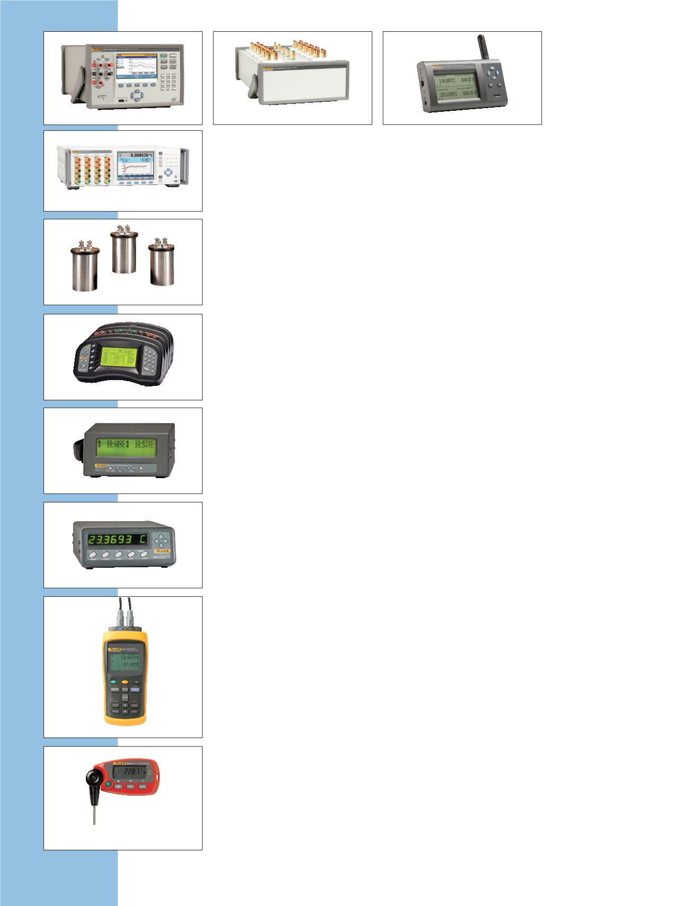

1586A
1594A/1595A
5430
1560
1529
1502A/1504
1523/1524
1551A Ex und 1552A Ex
1620A
Super-DAQ 1586A Temperatur-
scanner mit hoher Genauigkeit
Unübertroffene Genauigkeit bei der Tem-
peraturmessung und bis zu 40 isolierte
Eingangskanäle zur Messung von RTDs,
Thermoelementen, Thermistoren, Gleich-
spannung, Gleichstrom und Widerstand.
•
Genauigkeit bei Thermoelement-
messungen (± 0,5 °C)
•
Abtastrate: bis zu 10 Kanäle
pro Sekunde
•
Farbige Echtzeit-Trendgrafiken:
gleichzeitige Darstellung der
Messdaten von bis zu vier Kanälen
•
Steuerung von Fluke Calibration-
Temperaturquellen wie
Blockkalibratoren und Mikro-
bäder für automatisierte
Kalibrierroutinen
Super-Thermometer 1594A/1595A
Thermometriebrückengenauigkeit
in Kombination mit
Zeiteinsparungsfunktionen.
•
SPRT-, PRT-, RTD- und Thermistor-
kalibrierung (0 Ω bis 500 kΩ)
•
Genauigkeit bei fast 0,06 ppm
(0,000015 °C)
•
„Ratio Self-Calibration“ zur
Verifizierung und Kalibrierung des
Widerstands-Verhältnisses
Standard-Gleich-/Wechselspan-
nungswiderstand 5430
Die beste Leistung, die in einem
Gleich-/Wechselspan-nungswiderstand
verfügbar ist.
•
Langzeitstabilität besser als
2 ppm/Jahr (< 1 ppm typisch)
•
Rückführbare Gleich- und
Wechselspannungskalibrierungen
verfügbar
•
Nationale Laborkonstruktion mehr als
25 Jahre bewährt
Black Stack-Thermometer-anzeige
1560
Genaue, erweiterbare und
konfigurierbare Anzeige.
•
Ablesung von Normal-
Platinwiderstandsthermometern
(SPRTs), Widerstandsthermometern
(RTDs), Thermistoren und
Thermoelementen
•
Jede beliebige Konfiguration mit bis
zu acht Modulen
•
Hochgenaues Referenzthermometer
(auf 0,0013 °C genau)
Thermometer 1529 Chub-E4
Laborgenauigkeit auf vier Kanälen
für PRTs, Thermistoren und
Thermoelemente.
•
Vier Kanäle für Platin-
Widerstandsthermometer,
Thermistoren und Thermoelemente
•
Anzeige von acht benutzerdefinierten
Datenfeldern für jeden Kanal
•
Protokollierung von bis zu
8000 Messwerten mit Zeit- und
Datumsstempel
Thermometer-
Anzeigen 1502A/1504
Thermometer mit bester Leistung in
ihrer Preisklasse.
•
Einkanal-Referenzthermometer
•
Zwei Modelle zur Auswahl –
Messwerte für PRT oder Thermistor
•
Bestes Preis-/Leistungsverhältnis
Referenzthermometer 1523/1524
Für die Messung, Darstellung und
Aufzeichnung von drei Sensor-typen mit
einem Gerät.
•
Hohe Genauigkeit:
PRTs: ± 0,011 °C;
Thermoelemente: ± 0,24 °C;
Thermistoren: ± 0,002 °C
•
Einfache Benutzeroberfläche zur
schnellen Trenderkennung
•
Intelligente Anschlüsse zum
automatischen Laden von
Messfühlerinformationen
Die eigensicheren
Thermometer 1551A und 1552A
„Stik“
Der beste Ersatz für mit Quecksilber
gefüllte Präzisionsthermometer
aus Glas.
•
Genauigkeit ± 0,05 °C über den
gesamten Bereich
•
Durch und durch sicher (ATEX- und
IECEx-konform)
•
Zwei Modelle zur Auswahl (–50 °C
bis 160 °C oder –80 °C bis 300 °C)
Digitales Thermometer-
Hygrometer 1620A
Der genaueste grafische Temperatur-
und Feuchtigkeits-Datenlogger auf dem
Markt.
•
Herausragende Genauigkeit
•
Netzwerkfähig
•
Leistungsstarke Protokoll- und
Analysewerkzeuge
Temperaturmessgeräte
20
Temperaturkalibrierung